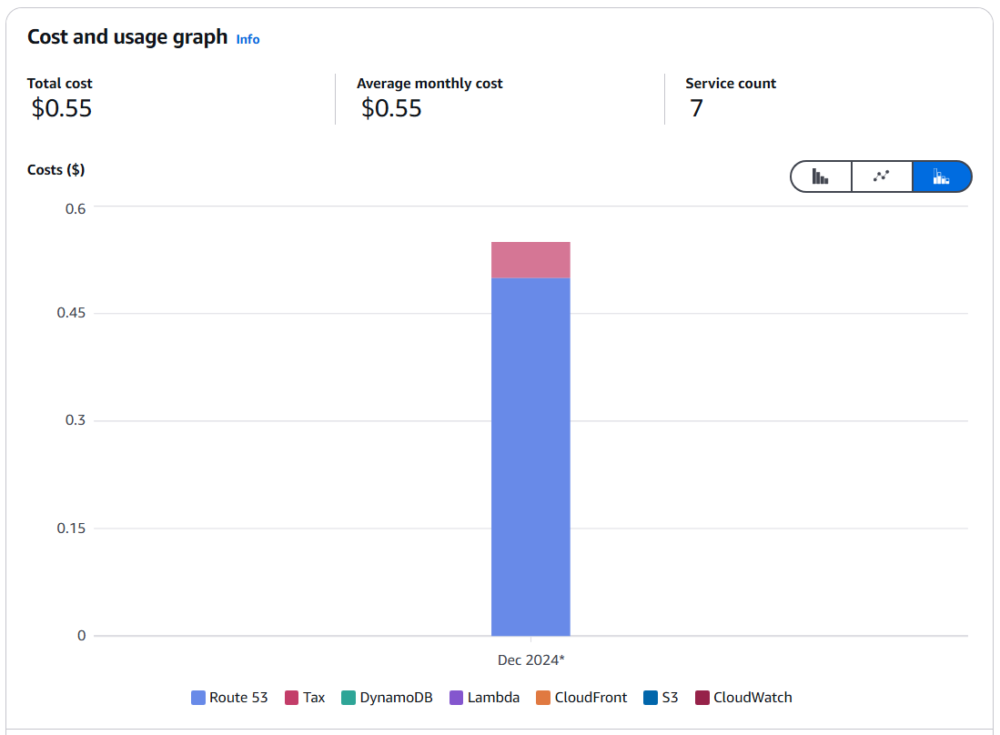
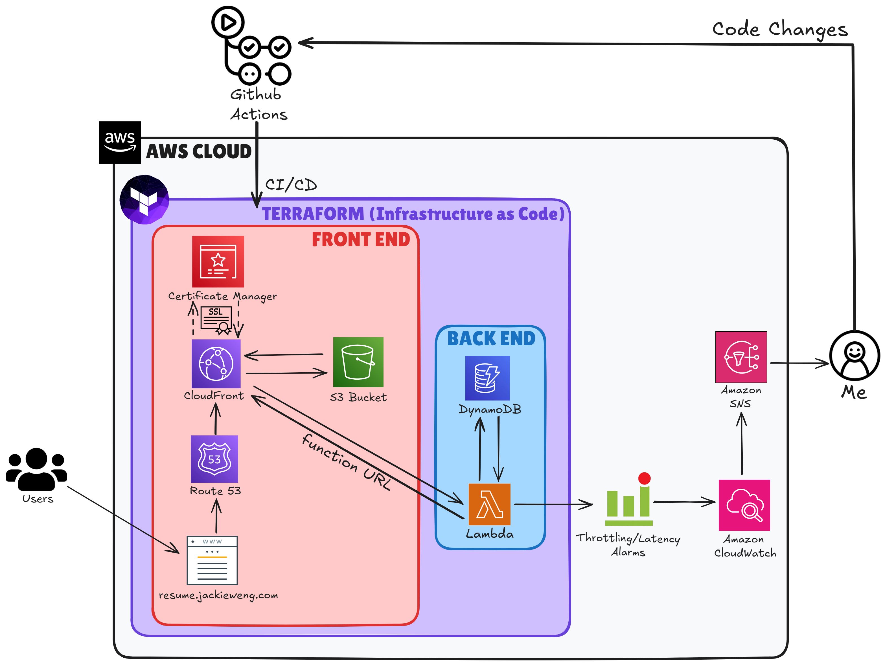

As of writing this article, the operational costs incurred from my cloud resume website total to a meager 55 cents per month. That's a nickel from taxes, and two quarters from the monthly Route53 fee of my single hosted zone. This is in stark contrast to the annual fees of popular website hosting—e.g., ~$96 via the cheaper Wordpress, and ~$276 via the pricier Squarespace.
Not only that, but I now have full control over my website's entire frontend/backend. This means everything—its SSL certification from Amazon's ACM, its current and future records via Route53, its Cloudfront CDN distribution, its entire infrastructure via Terraform, etc. Backend notwithstanding, I have also come to discover that the basic plans of some paid website services don't even let you customize your CSS and Javascript frontend!
With this being the case, I will now break down the process of developing this website using only AWS cloud services. These subsequent sections will correspond with this cloud architecture diagram I created using excalidraw.com:
The Importance of Infrastructure as Code
Originally, every single one of my website's AWS services were configured manually via clicking around in the AWS console. Not only is this practice tedious, but it also leads to innumerable risks. For example, as echoed by Forrest Brazeal (2024), the creator of the Cloud Resume Challenge...
- What would happen if I accidentally deleted the underlying infrastructure for my cloud resume?
- What if I wanted to change to a different cloud provider, such as Google Cloud or Microsoft Azure?
- How could I reproduce my resume easily if I had to delete it or move it in the future?
- Since I used a browser-based console, I'd already forgotten the settings and steps to configure my infrastructure resources. What settings did I make for my DNS? What name did my storage bucket have?
As a result, I had to extend and convert my project into IaC (Infrastructure as Code). As one might guess, IaC involves capturing and deploying the settings required for your specific infrastructure in a codified manner. There are several IaC services for AWS, but I chose to use the popular Terraform by Hashicorp for my website's deployment.
Phase 1: Frontend First
For the sake of convenience, brevity, and intent, I spent several days customizing and adding Javascript/CSS/HTML elements to a premade template. I personally obtained my template from html5up.net, but I've witnessed many other projects that have utilized styleshout.com. This was done to streamline my process and save time. After all, although I found many aspects of UI/UX design and web development fun, I wanted to spend more time on implementing the actual cloud services.
After creating a folder called "website", and housing my finished stylesheets/javascript/html inside, I could finally begin to deploy my website via Terraform. My Terraform directory structure consisted of four files:
- main.tf: This file contains the core infrastructure configuration, including:
- Lambda function setup with Python runtime and CloudWatch logging
- IAM roles and policies for Lambda and DynamoDB access
- S3 bucket configuration for static website hosting
- CloudFront distribution with HTTPS and caching settings
- Resource configurations for HTML, CSS, JavaScript, images, and SASS files
- Security policies for S3 bucket access through CloudFront
- variables.tf: This file declares the variables used in main.tf, such as bucket_name, website_index_document, and other configurable values that can be changed without modifying the main configuration.
- outputs.tf: This file defines what information should be displayed after applying the Terraform configuration, such as the CloudFront distribution domain name, Lambda function URL, or S3 bucket website endpoint. This file can be helpful for troubleshooting problems during the deployment.
- providers.tf: This file defines and configures the cloud providers and their settings that Terraform will use to create infrastructure. For this project, it only contains my AWS provider.
Phase 2: Creating a Static Website in S3 via Terraform
An S3 bucket is a container for storing data in Amazon Web Services' (AWS) Simple Storage Service (S3). S3 buckets are similar to folders, and can be used to store, retrieve, back up, and access objects. However, storage notwithstanding, hosting a static website via an S3 bucket is one of the cheapest and most lightweight site hosting options available. Therefore, my first IaC would have to initialize and populate an S3 bucket with my website's contents/files.
Here is my commented code for my S3 bucket's initial IaC deployment:
# Create an S3 bucket for hosting the static website
resource "aws_s3_bucket" "website_bucket" {
bucket = var.bucket_name
}
# Define the bucket policy to control access to the S3 bucket
resource "aws_s3_bucket_policy" "website_bucket_policy" {
# Reference the ID of the bucket we created above
bucket = aws_s3_bucket.website_bucket.id
# Create an IAM policy document using jsonencode function
policy = jsonencode({
# Specify the policy version
Version = "2012-10-17"
Statement = [
{
# Allow GetObject action (downloading/reading files)
Action = "s3:GetObject"
# Allow the action specified above
Effect = "Allow"
# Apply to all objects in the bucket using wildcard
Resource = "${aws_s3_bucket.website_bucket.arn}/*"
# Specify who can access (CloudFront Origin Access Identity)
Principal = {
CanonicalUser = aws_cloudfront_origin_access_identity.origin_access_identity.s3_canonical_user_id
}
}
]
})
}
# Upload the index.html file to the S3 bucket
resource "aws_s3_object" "index_html" {
# Specify which bucket to upload to
bucket = aws_s3_bucket.website_bucket.id
# Set the name/path of the file in the bucket
key = "index.html"
# Specify the local file to upload
source = "website/index.html"
# Add MD5 hash for change detection
etag = filemd5("website/index.html")
# Set the correct content type for HTML files
content_type = "text/html"
}- Creating an S3 bucket with a configurable name
- Setting up a bucket policy that only allows CloudFront to access the bucket's contents through an Origin Access Identity and resource policy
- Uploading the index.html file with proper content type and change detection
# Uploading images in the images folder
resource "aws_s3_object" "images" {
for_each = fileset("website/images", "*.{jpg,png}")
bucket = aws_s3_bucket.website_bucket.id
key = "images/${each.value}"
source = "website/images/${each.value}"
etag = filemd5("website/images/${each.value}")
content_type = endswith(each.value, ".jpg") ? "image/jpeg" : "image/png"
}
# Uploading JavaScript files
resource "aws_s3_object" "js_files" {
for_each = fileset("website/assets/js", "*.js")
bucket = aws_s3_bucket.website_bucket.id
key = "assets/js/${each.value}"
source = "website/assets/js/${each.value}"
etag = filemd5("website/assets/js/${each.value}")
content_type = "application/javascript"
}
Phase 3: Codifying a Secure and Certified Cloudfront Distribution
For Phase 3, I needed to produce the IaC for my website's Cloudfront distribution, and likewise, its SSL certificate assigned from Amazon's ACM. Cloudfront is Amazon's global content delivery network, which enabled my web content to be delivered with less latency via edge locations, further cost-effectiveness, and more security. ACM refers to AWS Certificate Manager, which enabled me to provision, manage, and deploy the custom SSL certificate for my website's domain. I will also note that I'd already prepurchased my domain name via Route53, hence the aliases in my code. This was also a necessary prerequisite to obtain an ACM-issued SSL certificate that corresponded with my domain's CNAME records.
The following is my commented code for my Cloudfront IaC deployment:
# Create a CloudFront Origin Access Identity to securely access S3 content
resource "aws_cloudfront_origin_access_identity" "origin_access_identity" {
comment = "Origin Access Identity for static website"
}
# Configure the CloudFront distribution
resource "aws_cloudfront_distribution" "cloudfront_distribution" {
# Define the origin (S3 bucket) configuration
origin {
# Use the S3 bucket's regional domain name
domain_name = aws_s3_bucket.website_bucket.bucket_regional_domain_name
# Unique identifier for this origin
origin_id = var.bucket_name
# Configure S3 specific settings with OAI
s3_origin_config {
origin_access_identity = aws_cloudfront_origin_access_identity.
origin_access_identity.cloudfront_access_identity_path
}
}
# Enable the distribution and IPv6
enabled = true
is_ipv6_enabled = true
# Set the default page (e.g., index.html)
default_root_object = var.website_index_document
# Configure caching behavior and security settings
default_cache_behavior {
# Define allowed HTTP methods
allowed_methods = ["DELETE", "GET", "HEAD", "OPTIONS", "PATCH", "POST", "PUT"]
# Specify which methods to cache
cached_methods = ["GET", "HEAD"]
target_origin_id = var.bucket_name
# Configure request forwarding
forwarded_values {
query_string = false
cookies {
forward = "none"
}
}
# Force HTTPS for all requests
viewer_protocol_policy = "redirect-to-https"
min_ttl = 0
default_ttl = 3600
max_ttl = 86400
}
# Configure SSL/TLS certificate settings
viewer_certificate {
acm_certificate_arn = aws_acm_certificate.cert.arn
ssl_support_method = "sni-only"
minimum_protocol_version = "TLSv1.2_2021"
}
# Set geographic restrictions (none in this case)
restrictions {
geo_restriction {
restriction_type = "none"
}
}
# Add tags for resource management
tags = {
Name = "Cloudfront Distribution"
Environment = "Dev"
}
# Configure custom domain names
aliases = [
"jackieweng.com",
"resume.jackieweng.com",
"www.jackieweng.com"
]
}
This code successfully:
- Created a CloudFront distribution with secure S3 access through an Origin Access Identity, as previously specified in the S3 bucket's resource policy
- Configured caching behaviors and HTTPS enforcement
- Set up basic distribution settings with IPv6 support
# Define AWS provider specifically for ACM in us-east-1 region (required for CloudFront certificates)
provider "aws" {
alias = "acm"
region = "us-east-1" # CloudFront requires certificates in us-east-1
}
# Create SSL/TLS certificate through AWS Certificate Manager
resource "aws_acm_certificate" "cert" {
provider = aws.acm # Use the us-east-1 provider defined above
domain_name = "jackieweng.com" # Primary domain for the certificate
subject_alternative_names = ["*.jackieweng.com"] # Wildcard subdomain support
validation_method = "DNS" # Use DNS validation instead of email
# Ensure new certificate is created before destroying old one
lifecycle {
create_before_destroy = true
}
}
# Fetch existing Route53 hosted zone information
data "aws_route53_zone" "primary" {
name = "jackieweng.com." # Domain name with trailing dot (DNS format)
}
# Create DNS records for certificate validation
resource "aws_route53_record" "cert_validation" {
# Create records for each domain validation option
for_each = {
# Transform validation options into a map for easier handling
for dvo in aws_acm_certificate.cert.domain_validation_options : dvo.domain_name => {
name = dvo.resource_record_name
record = dvo.resource_record_value
type = dvo.resource_record_type
}
}
allow_overwrite = true # Allow updating existing records
name = each.value.name # DNS record name
records = [each.value.record] # DNS record value
ttl = 60 # Time-to-live in seconds
type = each.value.type # DNS record type
zone_id = data.aws_route53_zone.primary.zone_id # Route53 zone ID
}After testing the deployment, my additional code for ACM successfully:
- Created and configured an SSL/TLS certificate in the required us-east-1 region for CloudFront using AWS Certificate Manager
- Set up certificate coverage for both the main domain and all subdomains (*.jackieweng.com)
- Configured automatic DNS validation through Route53 by:
- Fetching the existing Route53 zone information
- Creating necessary DNS validation records
- Setting up automatic certificate renewal through lifecycle policy
Phase 4: Creating a Basic View Counter Using DynamoDB & Lambda
At this point, my cloud resume seemed to near completion. However, for the challenge, my site still needed a view counter. This meant IaC that could create and initialize a DynamoDB database, along with subsequent IaC to produce a simple Lambda function that would update this database when called via its function URL. Amazon DynamoDB is a fully managed, serverless, key-value NoSQL database service that features scalability and built-in security. For this project, my database would contain only a single String key ID paired with a Number value to represent the site's viewer count. Meanwhile, AWS Lambda is a serverless compute service for running code without having to provision resources. This project's Lambda function used Python as its language, since the AWS SDK for Python (AKA Boto3) provided a conveniently built-in Python API.I began with the following DynamoDB IaC:
# Create a DynamoDB table for storing visitor count
resource "aws_dynamodb_table" "resume_table" {
# Set the table name
name = "[redacted]"
# Use on-demand pricing instead of provisioned capacity
billing_mode = "PAY_PER_REQUEST"
# Define primary key field name
hash_key = "id"
# Define the primary key attribute
attribute {
name = "id"
type = "S" # String type to match Lambda function's data type
}
}
# Initialize the table with a counter item
resource "aws_dynamodb_table_item" "counter" {
# Reference the table we created above
table_name = aws_dynamodb_table.resume_table.name
# Reference the primary key field
hash_key = aws_dynamodb_table.resume_table.hash_key
# Create initial item with id and view count
item = jsonencode({
"id" = {"S": "1"} # Primary key value as string
"views" = {"N": "0"} # Initial view count as number
})
}Now, onto the Lambda function's code. First, I created this Python function in a file named "func.py":
import json
import boto3
dynamodb = boto3.resource('dynamodb')
table = dynamodb.Table('[redacted]')
def lambda_handler(event, context):
response = table.get_item(Key={
'id':'1'
})
views = response['Item']['views']
views = views + 1
print(views)
response = table.put_item(Item={
'id':'1',
'views':views
})
return views- Connected to the DynamoDB table '[redacted]'
- Retrieved the current view count using id '1'
- Incremented the view count by 1
- Updated the DynamoDB table with the new count
- Printed the updated view count for logging
# Create a ZIP archive of the Lambda function code
data "archive_file" "zip" {
type = "zip" # Specify archive type
source_dir = "${path.module}/lambda/" # Directory containing Lambda code
output_path = "${path.module}/packedlambda.zip" # Where to save the ZIP file
}
# Create the Lambda function using the zipped code
resource "aws_lambda_function" "myfunc" {
filename = data.archive_file.zip.output_path # Path to the ZIP file
source_code_hash = data.archive_file.zip.output_base64sha256 # For detecting code changes
function_name = "myfunc" # Name of the Lambda function
role = aws_iam_role.iam_for_lambda.arn # IAM role for permissions
handler = "func.lambda_handler" # Function entry point
runtime = "python3.8" # Python version to use
}- Created a ZIP archive of the Python code in the lambda directory, which was necessary to pack it into the Lambda function
- Created an AWS Lambda function using the zipped code
- Configured the function with basic settings including name, runtime, and IAM role
- Set up change detection through source code hashing
With this being the case, the following IaC consisted solely of the minimum IAM role policy configurations for the Lambda function and DynamoDB database:
# Create IAM role for Lambda function
resource "aws_iam_role" "iam_for_lambda" {
name = "iam_for_lambda" # Name of the IAM role
# Define trust policy allowing Lambda to assume this role
assume_role_policy = <<EOF
{
"Version": "2012-10-17",
"Statement": [
{
"Action": "sts:AssumeRole", # Allow role assumption
"Principal": {
"Service": "lambda.amazonaws.com" # Lambda service can assume this role
},
"Effect": "Allow",
"Sid": "" # Statement identifier (optional)
}
]
}
EOF
}
# Create custom IAM policy for Lambda permissions
resource "aws_iam_policy" "iam_policy_for_resume_project" {
name = "aws_iam_policy_for_terraform_resume_project"
path = "/" # Policy path in IAM
description = "AWS IAM Policy for managing the resume project role"
# Define policy permissions using jsonencode
policy = jsonencode({
Version = "2012-10-17"
Statement = [
{
Action = [ # CloudWatch Logs permissions
"logs:CreateLogGroup",
"logs:CreateLogStream",
"logs:PutLogEvents"
]
Resource = "arn:aws:logs:*:*:*" # Apply to all log groups
Effect = "Allow"
},
{
Effect = "Allow"
Action = [ # DynamoDB permissions
"dynamodb:UpdateItem",
"dynamodb:GetItem"
]
Resource = "arn:aws:dynamodb:*:*:table/terraformed_cloudresume_test"
}
]
})
}
# Attach custom policy to Lambda role
resource "aws_iam_role_policy_attachment" "lambda_policy" {
role = aws_iam_role.iam_for_lambda.name
policy_arn = aws_iam_policy.iam_policy_for_resume_project.arn
}
# Attach DynamoDB full access policy to Lambda role
resource "aws_iam_role_policy_attachment" "lambda_dynamodb_full_access" {
role = aws_iam_role.iam_for_lambda.name
policy_arn = "arn:aws:iam::aws:policy/AmazonDynamoDBFullAccess"
}
# Create function URL for Lambda with CORS settings
resource "aws_lambda_function_url" "url1" {
function_name = aws_lambda_function.myfunc.function_name
authorization_type = "NONE" # Public access
# Configure CORS for specific domains
cors {
allow_credentials = false
allow_origins = [ # Allowed domain names
"https://resume.jackieweng.com",
"https://jackieweng.com",
"https://www.jackieweng.com"
]
allow_methods = ["GET"] # Allow only the GET HTTP method
allow_headers = ["content-type"]
max_age = 86400 # CORS cache duration
}
}- Creating an IAM role that Lambda can assume
- Defining custom permissions for CloudWatch Logs and DynamoDB
- Attaching both custom and full DynamoDB access policies
- Creating a public function URL with CORS configuration for specific domains
Here is the code for my view counter:
const counter = document.querySelector(".counter-number");
async function updateCounter() {
// Only update counter if we're on index.html
if (window.location.pathname.endsWith('index.html') || window.location.pathname === '/') {
try {
let response = await fetch("https://3mrygkjnlpfiequ4kmzahp2qvu0fjnmd.lambda-url.us-east-2.on.aws/");
let data = await response.json();
console.log("API Response:", data);
if (data.body) {
const views = typeof data.body === 'string' ? JSON.parse(data.body).views : data.body.views;
counter.innerHTML = views;
} else if (data.views) {
counter.innerHTML = data.views;
} else {
counter.innerHTML = data;
}
} catch (error) {
console.error("Error updating counter:", error);
counter.innerHTML = "0";
}
}
}
// Only call updateCounter if the counter element exists
if (counter) {
updateCounter();
}1. Updated the visitor counter on the index page by:Overall, the code worked in conjunction with the Lambda function defined in the Terraform configuration to track and display website visits.2. Included error handling and validation:
- Making an async fetch request to the Lambda function URL
- Parsing the response to extract the view count
- Displaying the count in an HTML element
- Only runs on index.html or root path
- Checks for different response formats
- Falls back to "0" if an error occurs
- Only executes if the counter element exists on the page
This marked the end of Phase 4, and the full completion of my website's IaC. With the entire website Terraformed, I could finalize my project with CI/CD (continuous integration/continuous deployment) via Github Actions.
Phase 5: Continuous Integration/Continuous Deployment Using Github Actions
Although applying local changes to my website via Terraform seemed to be sufficient, Github served as an extra backup for version control. This last phase aimed to push my site's modifications through Github Actions, thereby dynamically uploading my site's files to S3.To do so, I created a folder path named ".github\workflows" in the root directory of my website. Then, I created a file called "CI_CD.yml" and housed it inside this new directory. "CI_CD.yml" contained the configuration for Github Actions, in particular a useful open-source Action by Jake Jarvis that syncs any directory to a remote S3 bucket.
The following is the code I placed in "CI_CD.yml":
name: 'CI/CD'
on:
push:
branches:
- "main"
pull_request:
jobs:
deploy:
runs-on: ubuntu-latest
if: github.ref == 'refs/heads/main' && github.event_name == 'push'
steps:
- uses: actions/checkout@v3
- uses: jakejarvis/s3-sync-action@master
with:
args: --acl public-read --follow-symlinks --delete
env:
AWS_S3_BUCKET: ${{ secrets.AWS_S3_BUCKET }}
AWS_ACCESS_KEY_ID: ${{ secrets.AWS_ACCESS_KEY_ID }}
AWS_SECRET_ACCESS_KEY: ${{ secrets.AWS_SECRET_ACCESS_KEY }}
AWS_REGION: 'us-east-2'
SOURCE_DIR: 'website'These were the steps I took to define my prerequisite, sensitive environment variables:
By incorporating these secret environment variables in the repository's settings, GitHub Actions obtained the necessary encrypted credentials required to execute the CI/CD workflow.1.) Navigate to the settings of the GitHub repository. 2.) Select “Secrets and variables” from the left sidebar, under "Security" 3.) Click on "Actions". 4.) Click on “New repository secret”. 5.) Assign the variable name for the secret, e.g. “AWS_SECRET_ACCESS_KEY”. 6.) Input the corresponding value for the secret, e.g. the actual secret access key for your administrative account. 7.) Repeat steps 4 to 6 for the other secret environment variables, then save your secrets.
Conclusion
With Phase 5 completed, this finally marked the end of my entire cloud resume project. In retrospect, there were a few minor oversights throughout my site's development. For example, although my "main.tf" infrastructure was thoroughly sectioned by comments, it may have been better to simply separate each cloud service's IaC into multiple .tf files aptly named "S3", "Cloudfront", "Lambda", "DynamoDB", etc. Furthermore, the Lambda function's conditionals can be improved so that it only increments its view count for first-time visitors and/or time-based sessions.Overall, however, I firmly believe that this challenge greatly honed my skills, acting as a passionate conduit that transmitted my theoretical knowledge into actual fruition. Thank you for giving your invaluable time towards reading this article, and I wish you the best of luck in your future endeavors, as is the case with mine!
Works Cited
Brazeal, F. (2022, August 12). Terraform your cloud resume challenge. The Cloud
Resume Challenge. https://cloudresumechallenge.dev/docs/extensions/
terraform-getting-started/